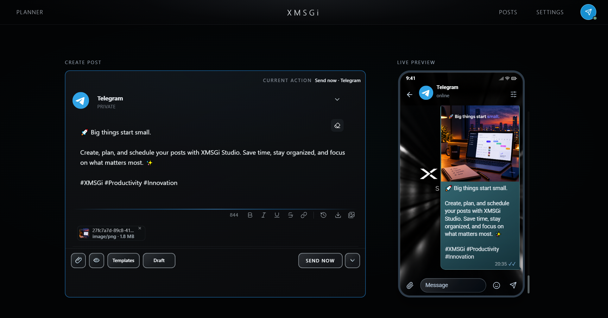
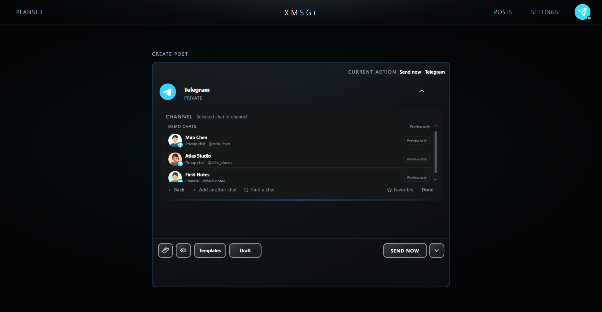
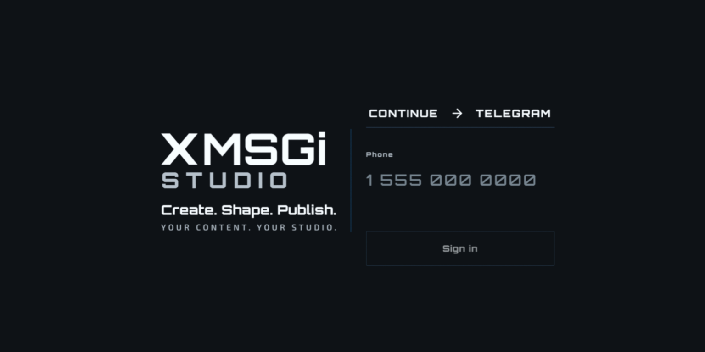

Составляйте пост в удобное время — XMSGi Studio отправит его по расписанию, даже если компьютер выключен. Без ботов и облака — только ваш аккаунт.

Полный контроль над каждой публикацией в очереди — прямо до момента отправки.


Скачайте и запустите — без установки и облака.